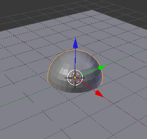
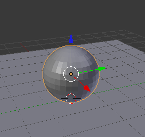
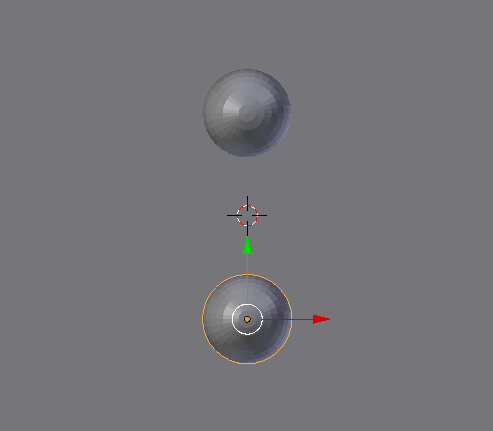
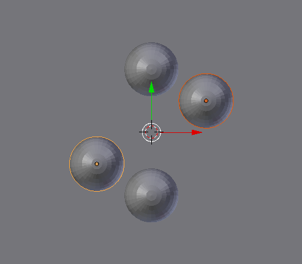
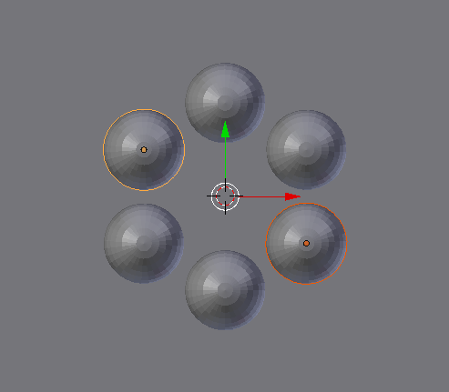
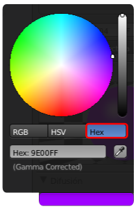
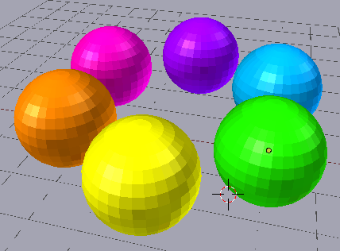
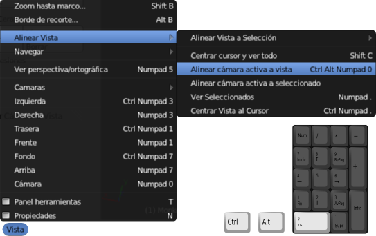
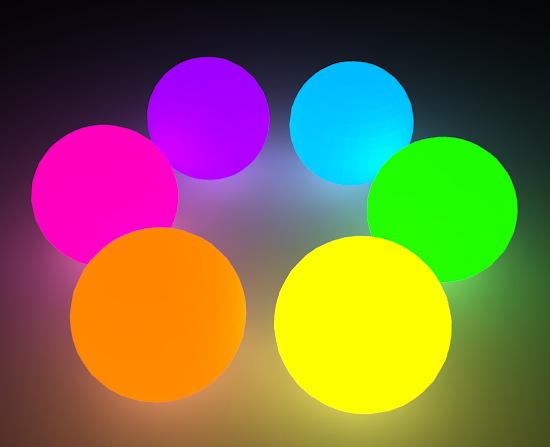

Material didáctico: Círculo cromático
Vamos a realizar un bonito círculo cromático con el que explicar la teoría de los colores complementarios. Damos por hecho que comenzamos con la escena de Blender por defecto.
- Eliminamos ("Supr") del cubo inicial y del punto de luz (a partir de ahora lámpara)
- Añadimos a la escena un plano (Añadir/Malla/Plano) que hará las veces de suelo. Lo escalamos ("S") más o menos al tamaño de la rejilla.
- Añadimos una Esfera UV (Añadir/Malla/Esfera UV). Como es lógico el plano corta a la esfera por la mitad debido a que no hemos movido el Cursor 3D.

- Desplazamos la esfera hacia arriba usando la flecha azul del Manipulador 3D y con "Control" pulsado para que se mueva a saltos de una unidad: esto garantiza la tangencia perfecta entre el plano y la esfera.

- Nos situamos en un punto de vista ortográfico "Numpad 5" (si está en cónica), desplazamos la esfera en el eje Y (verde) usando el Manipulador 3D para que no quede en el centro del plano.
- La duplicamos ("Shift_D") y desplazamos el duplicado de nuevo sobre el eje Y para conseguir esto.

- Seleccionamos las dos esferas y las duplicamos ("Shift_D"), ponemos en marcha la edición Rotar ("R") e introducimos a través de teclado la cifra 60. Comprobamos cómo no es necesario concluir la operación de duplicado para poner en marcha la de rotación ("Shift_D R60").

- Repetimos la operación anterior usando las dos nuevas esferas. También podríamos usar las esferas iniciales e introducir -60 (negativo) en lugar de 60.

Llega la hora de darles Materiales  con capacidad de emitir luz y
de preparar las condiciones del entorno para que se pueda generar la
luz indirecta.
con capacidad de emitir luz y
de preparar las condiciones del entorno para que se pueda generar la
luz indirecta.
Comenzamos por aplicar los colores adecuados al asignar materiales. Damos los colores en valor hexadecimal para que se puedan introducir con exactitud. Lo único que debemos hacer es desplegar el editor de colores en la botonera Difuso y acceder al modo de color Hex.
- Violeta: 9E00FF (como en el ejemplo de la captura de anterior).
- Magenta: FF00B5
- Naranja: FF8500
- Amarillo: FFFF00
- Verde: 1DFF00
- Cian: 00BCFF
- Plano del suelo: 585858
No importa que no se parezcan a lo esperado porque les falta añadirles la propiedad Emitir que corregirá ese efecto. Tras subirle este valor a 1 a todos sellos, este es el aspecto que presentan.
Sólo nos que activar la Iluminación indirecta tal y como hemos aprendido y buscar un bonito encuadre para nuestro círculo cromático.
Encuadre básico
Más adelante profundizamos en el tema del manejo de la cámara. De momento a lo que ya sabemos sobre el render la vamos a sumar un encuadre muy sencillo:
- Nos situamos en el editor Vista 3D para ver la escena desde donde nos gustaría renderizar.
- Usamos Vista/Alinear vista/Alinear cámara activa a vista (mejor aún "Control_Alt_NumPad 0")

En función del resultado activaremos el sombreado Suave o la Subdivisión.
